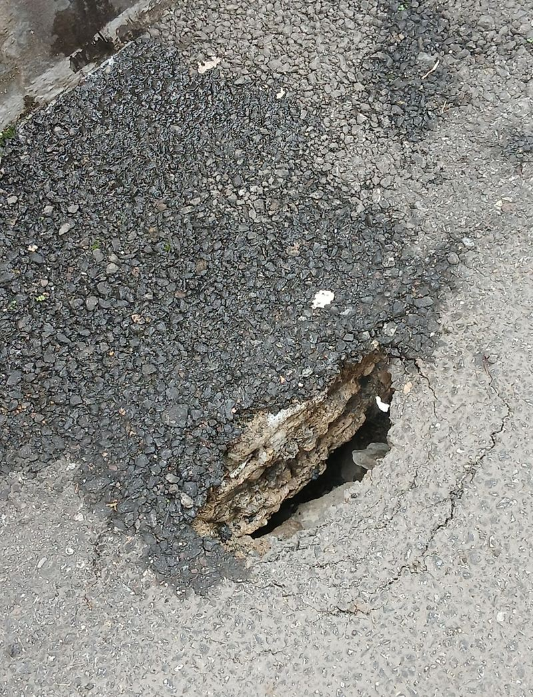
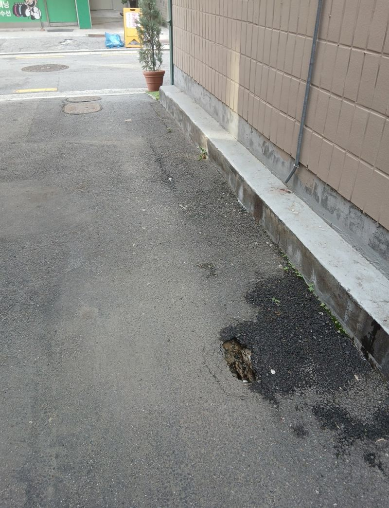
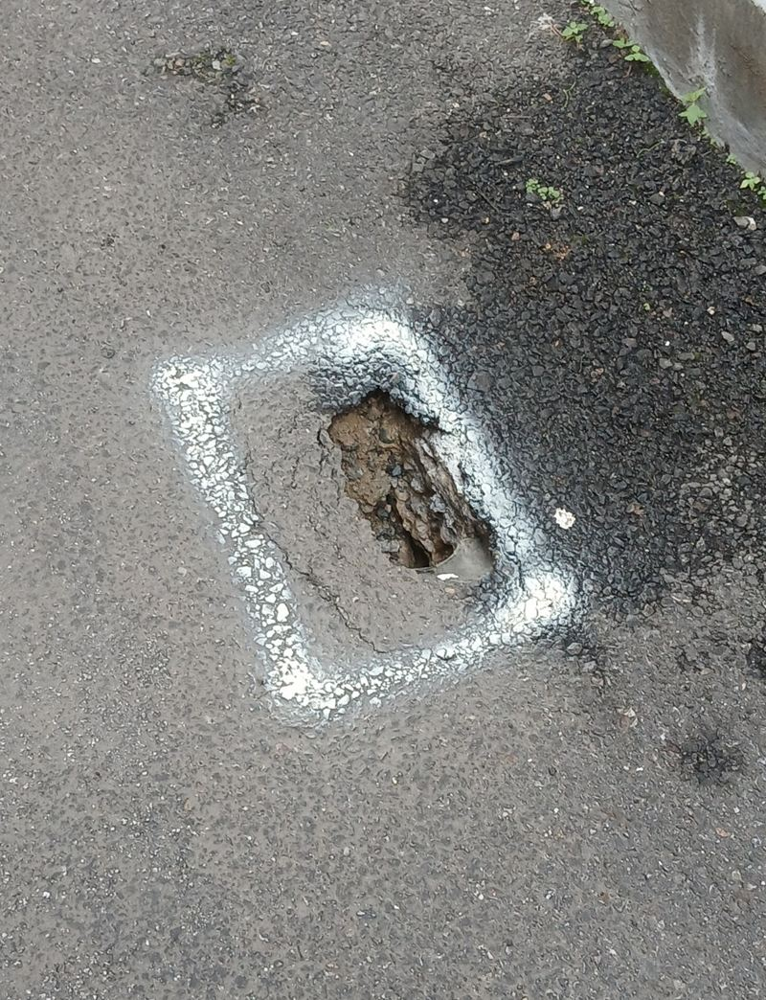
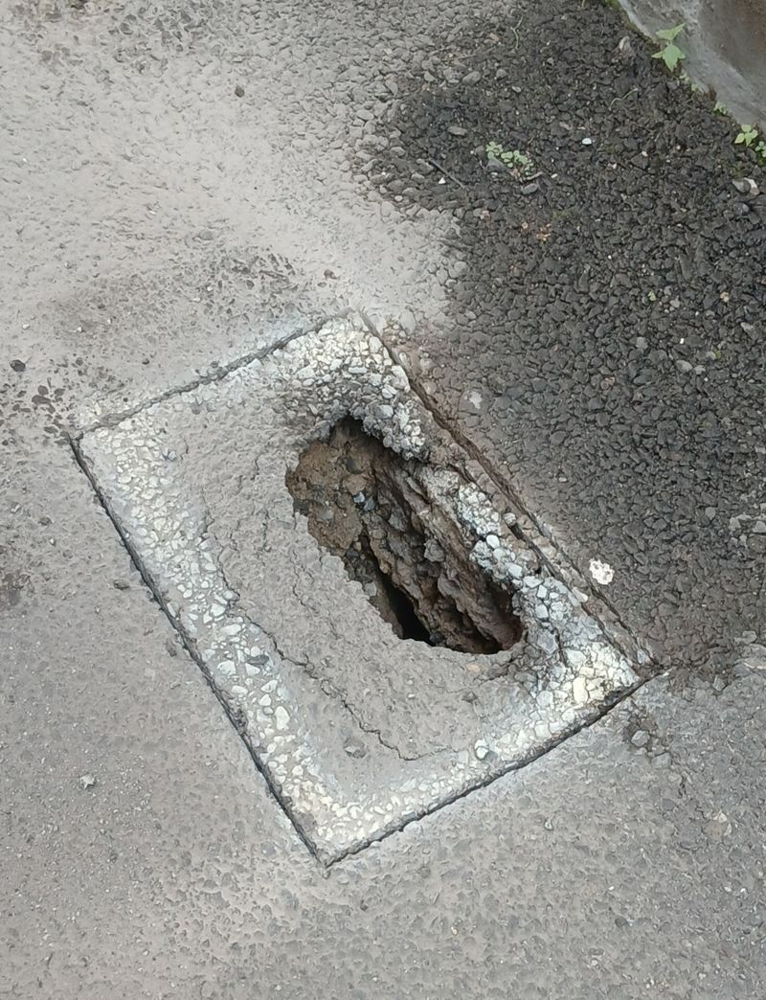
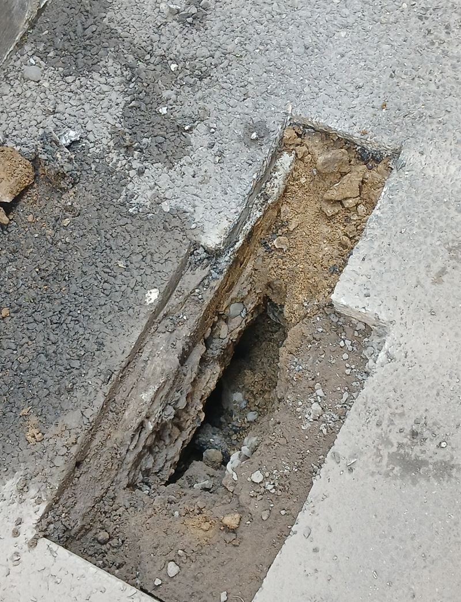
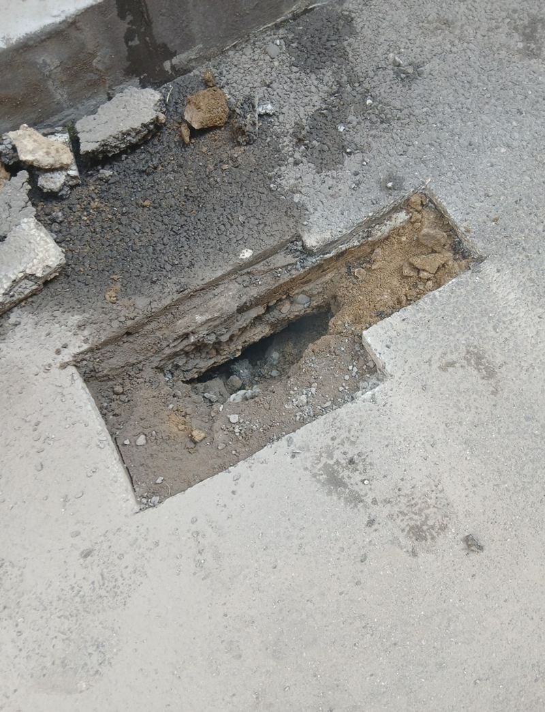
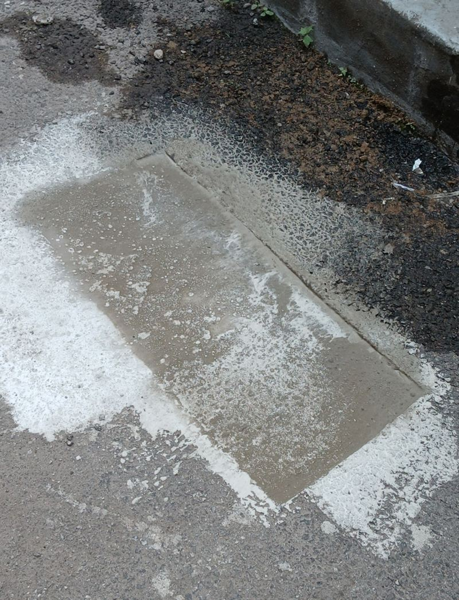

서초 아스팔트 콘크리트 꺼짐 보수 공사 방법

 보수 전보수 후
보수 전보수 후← 밀어서 전후 비교 →
"주차장 바닥이 움푹 꺼져서 작은 구멍이 생겼어요. 차도 오가고 학생들도 지나다니는데 더 커지기 전에 막아 주세요." 양재동 건물 옆 주차장 진입로였어요. 구멍은 손바닥 몇 개 크기였지만, 가장자리를 눌러 보니 아래가 비어 있었어요. 꺼진 부분을 사각으로 잘라 열고, 아래를 받친 다음 몰탈을 층층이 채워 주변 바닥과 높이를 맞췄어요.
| 현장 | 서울 서초구 양재동 건물 주차장 진입로 |
|---|---|
| 증상 | 아스팔트·콘크리트 바닥 일부가 꺼져 작은 싱크홀 |
| 한 일 | 범위 점검 → 사각 절단 → 하부 지지 → 고강도 몰탈 충진 → 표면 평탄 마감 |
| 마감 | 요청에 따라 아스콘 덮지 않고 몰탈로 마무리 |
바닥이 꺼지는 흔한 이유
위에서 보면 단단한 바닥도 아래 흙이 빠져나가면 버티지 못해요. 꺼짐은 대개 다음 중 하나에서 시작돼요.
- 땅속 배관 누수하수관·우수관에서 샌 물이 흙을 조금씩 쓸어 가요.
- 물 빠짐 불량빗물이 고여 있으면 아래 흙이 무르게 돼요.
- 처음 다짐 부족시공 때 덜 다진 바닥은 시간이 지나며 가라앉아요.
- 반복되는 차량 무게작은 균열이 차가 지날 때마다 벌어져 구멍이 돼요.

꺼진 바닥 보수 순서
깊이와 범위 확인
보이는 구멍보다 아래가 더 넓게 비어 있는 경우가 많아요. 가장자리를 두드려 보며 약한 범위를 찾았어요.
사각으로 절단
꺼진 곳을 그라인더로 반듯한 사각형으로 잘랐어요. 모양이 반듯해야 채운 뒤 경계에 단차가 생기지 않아요.


아래 받치기
몰탈이 빈 공간으로 흘러 빠지지 않도록 아래를 먼저 받쳤어요. 이걸 건너뛰면 채운 재료가 가라앉아 다시 꺼져요.


몰탈 충진과 마감
고강도 몰탈을 한 번에 붓지 않고 층층이 채우며 눌러 다졌어요. 빈틈이 남지 않게 한 뒤 표면을 주변과 같은 높이로 폈어요.

겉만 메우면 다시 꺼지는 이유
구멍에 시멘트만 부어 덮으면 당장은 멀쩡해 보여요. 하지만 아래 빈 공간이 그대로라 차가 몇 번 지나가면 메운 덩어리째 내려앉아요. 이번처럼 열어서 아래를 확인하고 받친 다음 채워야 오래 버텨요.
같은 자리가 자꾸 꺼진다면 바닥보다 배수 쪽을 의심해 봐야 해요. 근처 우수관이나 하수관이 새고 있지 않은지 함께 보는 게 좋아요. 지반 상태에 따라 철망이나 배수층 보강이 더 필요한 경우도 있어요.
고객분은 "작은 구멍이라 대수롭지 않게 생각했는데 아래가 비어 있었다니 놀랐다, 단차 없이 마무리돼서 안심된다"고 하셨어요.
이럴 땐 빨리 보세요
- 바닥이 살짝 내려앉은 자리에 물이 고여요꺼짐이 시작되는 신호일 수 있어요.
- 금 간 자리 가장자리가 부서져 나와요아래가 비어 위가 버티지 못하는 경우가 많아요.
- 차가 지날 때 덜컹거리는 소리가 나요바닥 속 빈 공간이 커졌을 수 있어요.
- 사람이 많이 다니는 길이에요작은 구멍에도 발이 걸려 다칠 수 있어 먼저 막는 게 좋아요.
바닥 꺼짐 보수 질문
작은 구멍인데 지금 고쳐야 하나요?
작을 때 고칠수록 범위가 작아요. 그대로 두면 주변 지반까지 약해져 공사가 커져요.
아스콘으로 덮어야 하나요?
몰탈 마감으로도 쓸 수 있어요. 주변과 색·질감을 맞추고 싶으면 아스콘 덮기를 더해요.
보수 후 바로 차가 지나가도 되나요?
몰탈이 굳을 때까지는 피해 주세요. 콘으로 막아 두고 안내해 드려요.
꺼진 곳이 여러 군데예요.
한 번에 보는 게 좋아요. 위치마다 원인이 같은지도 함께 확인해요.
비 오는 날도 작업하나요?
비가 오면 몰탈이 제대로 굳지 않아 날을 다시 잡아요.
배관 누수도 봐 줄 수 있나요?
꺼짐 주변 배수 상태는 함께 살펴요. 배관 공사가 필요하면 범위를 따로 안내해요.
다른 바닥 보수 현장
꺼진 부위를 가까이, 그리고 주변까지 멀리서 한 장씩 찍어 보내 주세요.
전화 상담 010-4517-9872